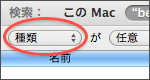

Spotlight でログを検索できない
Spotlight でログを検索できない
Spotlight で検索を行っても、BathyScaphe のログファイルが検索結果に表示されない場合があります。BathyScaphe のログの保存場所を変更していない場合に、この問題が発生することがあります。
問題を解決するため、以下の方法を試します：
BathyScaphe のログの保存場所を「ライブラリ」フォルダの下ではない場所（例えば、「書類」フォルダの下や「ホーム」フォルダの下）に変更すると、検索結果に表示されるようになります。
ログの保存場所を変更するのが難しい場合は、メニューバーの右上隅にある Spotlight アイコンではなく、Finder の検索機能を使用します。さらに、追加の検索条件を指定します。
- Finder で、「ファイル」＞「検索」と選びます。
- 検索条件を追加するため、ポップアップボタン（下図）をクリックします。
 - メニューから「その他…」を選択します。
- 「システムファイル」という属性を見つけて、「OK」をクリックします。
- 「システムファイル」「を含む」という条件を指定します。
- 検索語句を入力して、検索を実行します。
上記の方法を実行しても検索結果に表示されない場合は、別の問題が原因である可能性もあります。追加のヒントについては、BathyScapheWiki を参照してください。